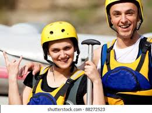

we believe in delivering excellence with every project we take on. Our mission is to empower individuals through innovative solutions, while fostering a culture of collaboration and trust.


we believe in delivering excellence with every project we take on. Our mission is to empower individuals through innovative solutions, while fostering a culture of collaboration and trust.
In the heart of San Agustín, Huila, the Angulo family turned their love for adventure and the natural beauty of the Magdalena River into a rafting business. Starting with just a few rafts and a deep respect for the river's power, they began guiding visitors through its thrilling rapids. The family faced many struggles—unpredictable weather, tough terrain, and limited equipment—but their passion kept them going. With each trip, they shared their knowledge of the river's history and the surrounding mountains, creating unforgettable memories for their guests. One day, a powerful storm hit while a group of tourists was on the river. The water rose quickly, and the group was in danger. Without hesitation, the Sánchez family raced to help, expertly navigating the dangerous rapids and bringing everyone to safety. This brave act earned them the trust and admiration of their clients. Today, Sánchez Rafting is known for its dedication, offering visitors a mix of adventure and cultural experiences while showing off the stunning landscapes of San Agustín, Huila.